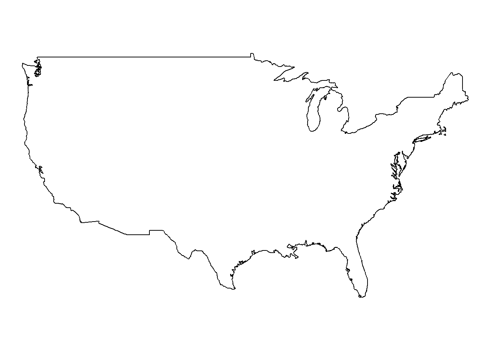
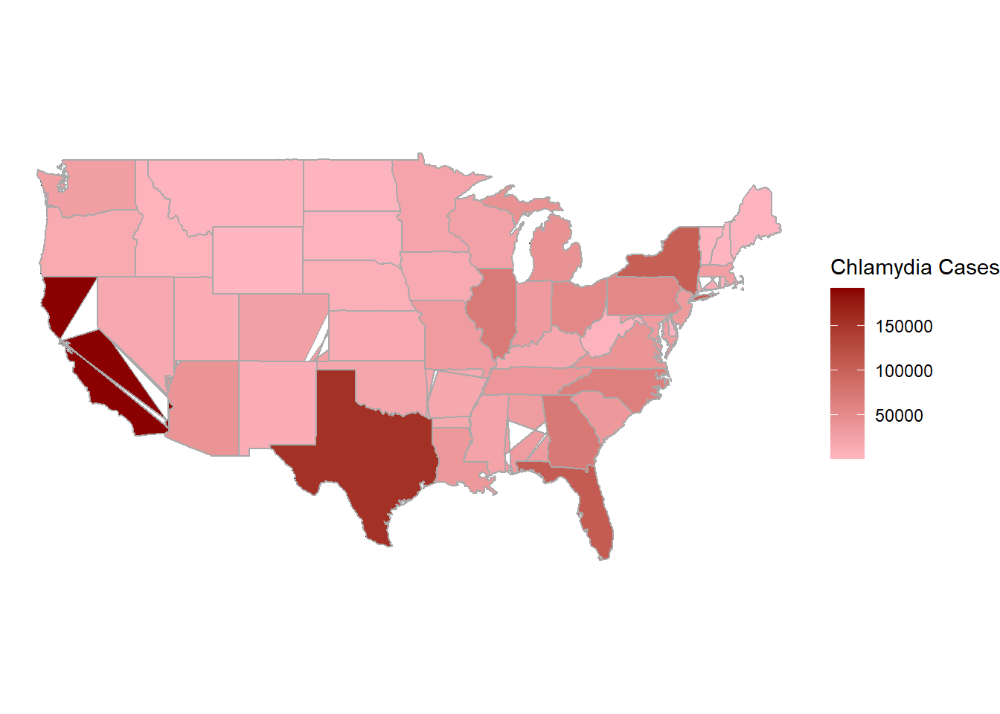
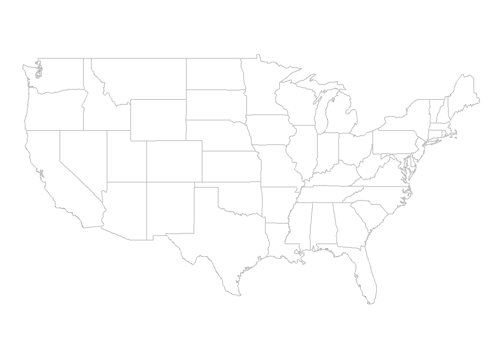
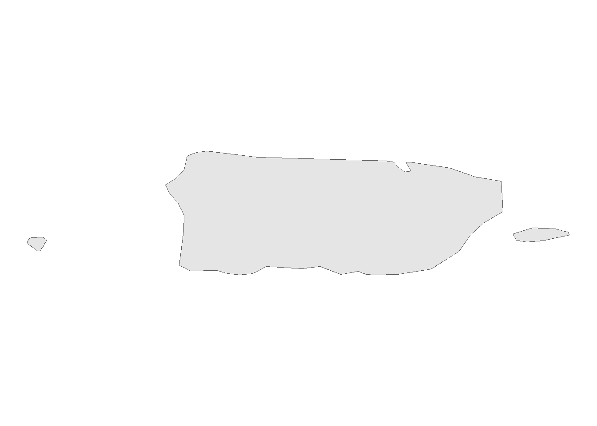

In this assignment, we’ll consider some of the tools and techniques for visualizing spatial data. Spatial data comes in two broad categories, geographic and spatial fields. Let’s practice a few visualizations to get a feel for how these things work!
GEOGRAPHIC MAPS!
In class I bet Ronald that he would end up creating some kind of map based visualization before he graduated with his PHD. This is because he works on Malaria - a terrible disease with a strong spatial component to its risk levels. Let’s get some Malaria data and map it!
The data I obtained were from the Malaria Atlas. I downloaded a csv for 10 years of data for all the countries the had on file.
Now I’m going to use the rnaturalearth package to create contry polygons. Then I’ll add the Malaria data to that data frame.
Code
world_map <-ne_countries(scale ="medium", returnclass ="sf")map_data <- world_map %>%left_join(Incidence, by =c("iso_a3"="ISO3"))%>%filter(!is.na(Prevalence))
Now I will make a plot!
Code
library(gganimate)library(transformr)library(magick)library(gifski)# ggplot() +geom_sf(data = map_data%>%filter(continent=="Africa"),aes(fill = Prevalence)) +scale_fill_gradient(low ="white", high ="red", na.value ="gray", name ="Malaria Prevalence") +theme_minimal() +theme(axis.text =element_blank(), axis.ticks =element_blank(), axis.title =element_blank()) +labs(title ="Malaria Prevalence by Country")

My VERSION
Code
library(ggplot2)library(sf)library(maps)# Load U.S. map datausa <-map_data("usa")# Plot U.S. mapggplot() +geom_polygon(data = usa, aes(x = long, y = lat, group = group), fill ="white", color ="black") +coord_fixed(1.3) +# Aspect ratio adjustmenttheme_void() # Remove unnecessary elements

Code
# Load U.S. state boundary datastates <-map_data("state")# Plot U.S. map with state boundariesggplot() +geom_polygon(data = usa, aes(x = long, y = lat, group = group), fill ="white", color ="black") +geom_polygon(data = states, aes(x = long, y = lat, group = group), fill =NA, color ="gray") +# Add state boundariescoord_fixed(1.3) +# Aspect ratio adjustmenttheme_void() # Remove unnecessary elements

Code
# Load required packageslibrary(readxl)library(ggplot2)# Load your Chlamydia cases dataset (assuming it's named 'ChlamydiaInfectionRate.xlsx')chlamydia_data <-read_excel("ChlamydiaInfectionRate.xlsx")# Merge Chlamydia cases data with state boundaries datastates_chlamydia <-merge(states, chlamydia_data, by.x ="region", by.y ="State", all.x =TRUE)# Unique values in the 'region' column of the 'states' dataframeunique(states$region)
# Trim leading and trailing spaces from the key columnsstates$region <-trimws(states$region)chlamydia_data$State <-trimws(chlamydia_data$State)# Convert key columns to lowercase before mergingstates$region <-tolower(states$region)chlamydia_data$State <-tolower(chlamydia_data$State)# Perform mergestates_chlamydia <-merge(states, chlamydia_data, by.x ="region", by.y ="State", all.x =TRUE)# Plot the map with Chlamydia cases dataggplot() +geom_polygon(data = usa, aes(x = long, y = lat, group = group), fill ="white", color ="black") +geom_polygon(data = states_chlamydia, aes(x = long, y = lat, group = group, fill = Cases), color ="darkgray") +# Add state boundaries with Chlamydia casesscale_fill_gradient(low ="lightpink", high ="darkred", name ="Chlamydia Cases") +# Customize the color scalecoord_fixed(1.3) +# Aspect ratio adjustmenttheme_void() # Remove unnecessary elements
Code
library(rnaturalearth)library(rnaturalearthdata)library(dplyr)library(rnaturalearthhires)# Get the spatial data for countriescountries <-ne_countries(scale ="medium", returnclass ="sf")# Filter the dataset to extract Puerto Ricopuerto_rico <-subset(countries, admin =="Puerto Rico")# Plot Puerto Rico's geometryggplot() +geom_sf(data = puerto_rico) +theme_void()

Source Code
---title: "Practice with Spatial Data"subtitle: "MAPS!"format: html: toc: false echo: trueauthor: "Geraline Trossi-Torres"date: "2024-04-18"categories: [DataViz, Spatial, GGPlot, Assignment]image: "map.png"description: "Maps and Spatial Fields are fun!"code-fold: truecode-tools: true---## OVERVIEWIn this assignment, we'll consider some of the tools and techniques for visualizing spatial data. Spatial data comes in two broad categories, geographic and spatial fields. Let's practice a few visualizations to get a feel for how these things work!## GEOGRAPHIC MAPS!In class I bet Ronald that he would end up creating some kind of map based visualization before he graduated with his PHD. This is because he works on Malaria - a terrible disease with a strong spatial component to its risk levels. Let's get some Malaria data and map it!The data I obtained were from the [Malaria Atlas](https://data.malariaatlas.org/trends?year=2020&metricGroup=Malaria&geographicLevel=admin0&metricSubcategory=Pf&metricType=rate&metricName=incidence). I downloaded a csv for 10 years of data for all the countries the had on file.```{r, include=FALSE}library(readxl)library(dplyr)library(tidyverse)library(lubridate)library(knitr)library(ggplot2)library(readxl)library(rnaturalearth)library(rnaturalearthdata)library(gganimate)library(transformr)library(magick)library(gifski)library(sf)library(maps)``````{r}library(tidyverse)library(readxl)library(rnaturalearth)library(rnaturalearthdata)library(dplyr)Malaria <-read.csv("National_Unit_data.csv")Incidence<- Malaria%>%filter(Metric =="Infection Prevalence")%>%mutate(Prevalence = Value, Year =as.factor(Year))#%>%#select(c(ISO3, Prevalence, Year))```Now I'm going to use the `rnaturalearth` package to create contry polygons. Then I'll add the Malaria data to that data frame.```{r}world_map <-ne_countries(scale ="medium", returnclass ="sf")map_data <- world_map %>%left_join(Incidence, by =c("iso_a3"="ISO3"))%>%filter(!is.na(Prevalence))```Now I will make a plot!```{r}library(gganimate)library(transformr)library(magick)library(gifski)# ggplot() +geom_sf(data = map_data%>%filter(continent=="Africa"),aes(fill = Prevalence)) +scale_fill_gradient(low ="white", high ="red", na.value ="gray", name ="Malaria Prevalence") +theme_minimal() +theme(axis.text =element_blank(), axis.ticks =element_blank(), axis.title =element_blank()) +labs(title ="Malaria Prevalence by Country")```## My VERSION```{r}library(ggplot2)library(sf)library(maps)# Load U.S. map datausa <-map_data("usa")# Plot U.S. mapggplot() +geom_polygon(data = usa, aes(x = long, y = lat, group = group), fill ="white", color ="black") +coord_fixed(1.3) +# Aspect ratio adjustmenttheme_void() # Remove unnecessary elements# Load U.S. state boundary datastates <-map_data("state")# Plot U.S. map with state boundariesggplot() +geom_polygon(data = usa, aes(x = long, y = lat, group = group), fill ="white", color ="black") +geom_polygon(data = states, aes(x = long, y = lat, group = group), fill =NA, color ="gray") +# Add state boundariescoord_fixed(1.3) +# Aspect ratio adjustmenttheme_void() # Remove unnecessary elements``````{r}# Load required packageslibrary(readxl)library(ggplot2)# Load your Chlamydia cases dataset (assuming it's named 'ChlamydiaInfectionRate.xlsx')chlamydia_data <-read_excel("ChlamydiaInfectionRate.xlsx")# Merge Chlamydia cases data with state boundaries datastates_chlamydia <-merge(states, chlamydia_data, by.x ="region", by.y ="State", all.x =TRUE)# Unique values in the 'region' column of the 'states' dataframeunique(states$region)# Unique values in the 'State' column of the 'chlamydia_data' dataframeunique(chlamydia_data$State)# Trim leading and trailing spaces from the key columnsstates$region <-trimws(states$region)chlamydia_data$State <-trimws(chlamydia_data$State)# Convert key columns to lowercase before mergingstates$region <-tolower(states$region)chlamydia_data$State <-tolower(chlamydia_data$State)# Perform mergestates_chlamydia <-merge(states, chlamydia_data, by.x ="region", by.y ="State", all.x =TRUE)# Plot the map with Chlamydia cases dataggplot() +geom_polygon(data = usa, aes(x = long, y = lat, group = group), fill ="white", color ="black") +geom_polygon(data = states_chlamydia, aes(x = long, y = lat, group = group, fill = Cases), color ="darkgray") +# Add state boundaries with Chlamydia casesscale_fill_gradient(low ="lightpink", high ="darkred", name ="Chlamydia Cases") +# Customize the color scalecoord_fixed(1.3) +# Aspect ratio adjustmenttheme_void() # Remove unnecessary elements``````{r}library(rnaturalearth)library(rnaturalearthdata)library(dplyr)library(rnaturalearthhires)# Get the spatial data for countriescountries <-ne_countries(scale ="medium", returnclass ="sf")# Filter the dataset to extract Puerto Ricopuerto_rico <-subset(countries, admin =="Puerto Rico")# Plot Puerto Rico's geometryggplot() +geom_sf(data = puerto_rico) +theme_void()```